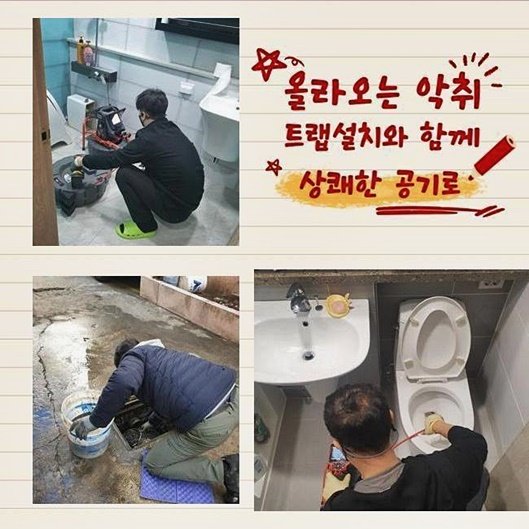
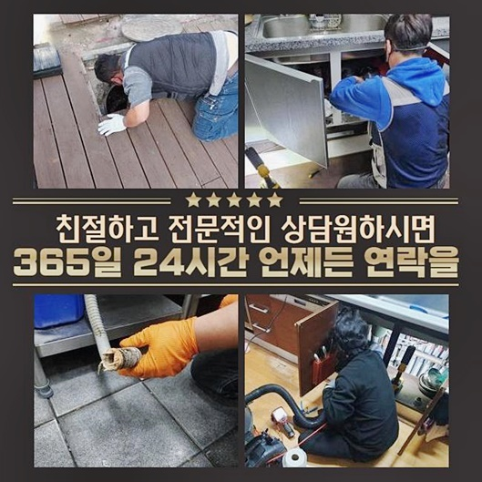
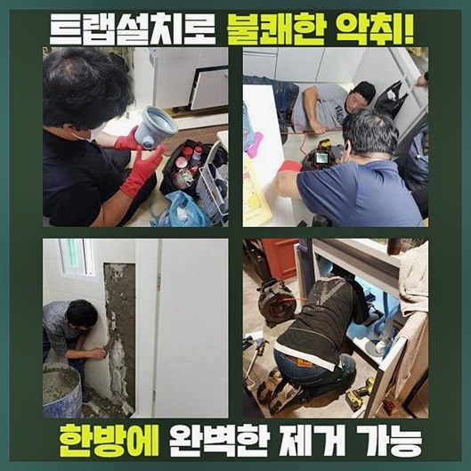
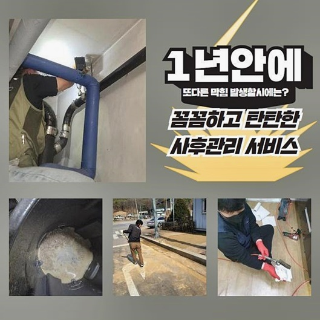
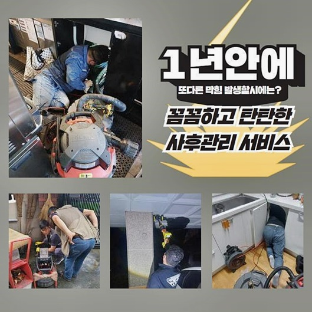
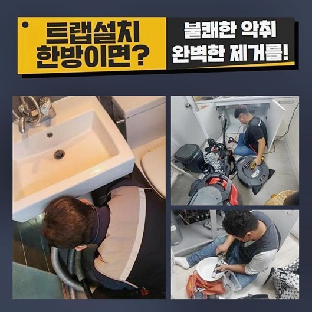
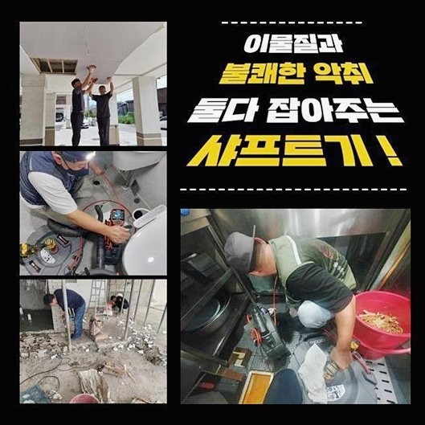

🏠 일산 탄현동오수관뚫음 구산동 배관뚫기 통수전문
용인시 처인구 배관막힘 전문 시공 후기

📋 작업 개요
- 위치: 용인시 처인구, 수원시 영통구, 화성시 동탄
- 서비스 유형: 배관막힘, 배관수리, 고압세척, 내시경점검
- 작업 일시:
- 업체명: 하수구수사대 (010-5615-2118)
🔍 문제 상황
일산 탄현동오수관뚫음 구산동 배관뚫기 통수전문
안녕하십니까 하수구에 일어난 여러 문제를 해결해드리는 사람입니다
배수파이프는 다양한 오물이 방출되는 곳이죠 그리고 홀의 단면이 비좁게 형성되어 있어요
정결한 액체성분만 유입되는 경우라 하면 고장이 생기지 않겠지만 까딱하다 고체 등이 들어가면 정체된 배관을 만날 수도 있답니다
유별히 음식 찌꺼기들이나 머리카락 뭉치 등의 잔재들이 누적되면 배수관이 고장나기 쉽답니다 이땐 집안의 도구들을 통해 고쳐내기 힘들 때가 많아요
파이프 안쪽은 외부에서 인지하기 힘겨운데요 침전물들이 올라와 밖에 토출되지 않고서는 판단하기 어렵죠
여러 재료들을 손질하는 싱크대 주변은 평상시 관리를 등한시하면 배수 속도가 느려지거나 폐쇄되는 사태가 이따금 일어나게 되는데요
간혹 국물요리 등에서 방출된 오일류가 쌓이면 쉽사리 처치하기 어렵습니다
이럴 땐 배관청소를 주업으로 하는 숙련가에게 문의해서 진단을 받아보시는 것이 좋답니다
저희는 갑작스럽게 나타난 파이프 장애로 고객께서 급박한 출장을 바라셔서 더더욱 바삐 움직였어요
의뢰자의 요망에 부응하여 지점에 당도하면 우리는 오래된 업력과 수준높은 재능을 활용해서 배관을 면밀하게 수리합니다
식구들과 저녁 식사를 마치고 샤워를 하려고 준비중에 화장실의 퇴수구에 물이 안 빠져서 문의를 주신거라고 하네요
대부분의 사람들은 하수구가 정체되면 자기 힘으로 수선을 시도하곤 하죠
화학제품을 부어 보거나 긴 막대를 적용하시곤 하죠 그렇지마는 배관면이 파괴될 수도 있으므로 주의하셔야 하는데요

🔎 원인 분석
💡 전문가 진단: 정밀 진단 장비를 사용하여 슬러지의 고착 여부를 판명하고 타격/세척 작업을 실시했습니다.
예상과는 다르게 파이프는 충격에 취약하기에 이차적인 충격으로 물샘이 나타나기도 해요
다양한 방법으로 고치려 계획하시다가 쉽게 수선되지 않았기에 우리와 같이 배관수리를 전문적으로 하는 기술자를 구하셨다고 했습니다
막힘은 왜 일어나게 되었는지 까닭을 알아내는 일에 주안점을 두어야 하겠죠? 우린 기기들을 갖추고 고장이 발생한 지점에 당도하였습니다
개별적인 막힘에 기초하여 세정 순서가 상이하고 가동하는 공구들도 차이납니다
전문인은 이유를 발견하고 올바른 방책을 내놓을 수 있어야 하죠
또한 본시공을 속행하기 전 주변의 상황을 면밀하게 들여다봐야 하죠
상황에 따라 우선 흡입기를 이용해서 배수공 부근의 잔재들을 치우고 배관카메라를 통해 배수관 내측을 들여다보는 패턴도 존재해요
고장이 난 부위를 관찰하니 탁수가 흘러 거실까지 퍼진 것을 알게 되었어요
괴로워하시는 문의자님을 뵈니 무척 안타까운 마음이 들었어요 손상된 부분을 점검하니 모두 교체해야 하는 상황이었죠 구린내도 심했습니다
보는 것처럼 셀프로 뚫어보다가 실패하고 시간만 보내신다면 심각한 경제적 피해를 일으키기도 하기에 초창기에 신속히 고치는 게 알맞습니다
현재 상황으로는 침전물이 가득해서 내시경cctv를 넣기가 난삽해서 우선적으로 석션기기를 통해 세정했죠
일상적으로 사용하는 통수도구가 있긴 하나 역류증세가 나타날 때는 침전물이 장애가 되기에 흡입기를 쓰는 겁니다
큰 찌꺼기들 위주로 세척하기 때문에 이물이 존재하는 지점에 올바르게 겨누어야 합니다
해당 작업으로 들머리를 세척하고 내시경설비를 투입하여 검사했지요
내시경기계는 깊은 배관 안쪽을 바로바로 볼 수 있게 하는데요

🔧 작업 과정
이유와 문제의 지점을 관찰하는데에 효과가 아주 크죠
내시경cctv가 진입한 뒤 내측의 모양새를 보니 두꺼운 기름층이 고착화되어 있었죠
찌꺼기들이 엉켜서 관의 측면에 정체하여서 배수길이 막혔기에 수돗물이 못빠지고 역류증세까지 보인거죠
평상시 버렸던 기름성분이 주원인이었답니다
하수관은 여러가지의 폐수가 들어가기에 물에 녹지 않는 성분도 수용할 수밖에 없답니다
따라서 기름때 등이 긴 시간 적층을 이루어 배수관을 망가뜨리는 사태가 곧잘 생겨요
평상시에 고장을 방예하기 위하여 물을 끓여서 한번에 흘려보내 비정상적이지는 않은지 확인을 해보시는 것을 추천해요
하수구에 각종 기름덩이들이 다량으로 존재하여 첨단 기기를 통해 처리하기로 했죠
분쇄 및 관통 기계들을 적용하여 배관클리닝을 실시하였죠
샤프트 분쇄도구는 하수관에 지속적으로 정체하였던 노폐물을 쇄소하고 끈끈해진 물질들을 대상으로도 쓸 수 있죠
강인한 드릴류로 이물질에 적용하기에 고착화된 찌꺼기들도 정결하게 처치할 수가 있는겁니다
그러나 고전압으로 돌리는 것이므로 비전문가가 만지면 하수관을 훼손을 만들 수도 있어요
그러므로 이러한 기기들 가동시킬 땐 숙련된 사람이 솔선해야 합니다
샤프트기기를 통해서 기름때 등을 자그맣게 만드는 공정을 이행중입니다
다행스럽게도 일부분에만 각종 기름덩이들이 누증된 모습이었고 주변 처소는 청결했기 때문에 예상외로 배수구 세척 공정을 잽싸게 행할 수 있었습니다
지속적으로 배관카메라로 배수관 안을 조사하며 기기를 돌려 이물들을 소제했더니 점차적으로 청결해지는 게 포착되었어요
이상없는지 점검하기 위하여 촬영기기를 넣어서 관찰해보았죠
브라운관을 통해 관찰하니 좀전까지 하수관을 채우고 있었던 고형물들이 어느새 세척되어서 깔끔한 관 내부를 직시하게 되었어요
끝으로 배수가 잘 되는지 점검에 들어갑니다
일거에 수돗물을 많이 들이부었는데 신속히 사라지는 것을 알게 되었어요
하단부위 장에 물샘이 나타났던 장소도 지켜보며 진단을 하였던 건데 트러블없이 온전히 없어지는 모습을 확인하고 완료하게 되었죠
테스트할 때는 손님분에게 막힘이 해소되었다는 걸 즉각적으로 인지하게끔 하였어요
우리가 진행한 본 시공에서 보셨던 것과 유사하게 물흐름 정체로 역류까지 생기는 증세 대개가 관 내측이 고장난 것이 원인이라 말씀드릴 수 있겠네요


✅ 작업 완료
물흐름 차단 등은 회피하기 힘겨운 부분이에요
이와 유사한 장애가 발발하면 곧바로 권위자의 조력으로 수리하는 것이 좋답니다
이 과정에서 2차적인 고장을 막아낼 수 있는겁니다
영별히 기름찌꺼기로 갑갑하게 차단되었다면 능숙한 기술을 가진 기술자에게 의뢰하여 파이프 안을 세척하시는 것을 권해 드립니다
돈을 절약할 수 있는 해결방안이라고 강력하게 말씀드려요
아무때나 연락만 주신다면 재빨리 출동하겠습니다




⚠️ 하수구 배관 막힘 예방 및 관리 가이드
- ✅ 머리카락, 비닐, 물티슈 등 물에 분해되지 않는 이물질은 절대 흘려보내지 마세요.
- ✅ 기름기 많은 식기는 설거지 전 키친타올로 먼저 기름때를 닦아내세요.
- ✅ 주기적으로 배수구에 뜨거운 물을 가득 부어주어 유지방 고착을 방지하세요.
- ✅ 작업 후 1년 이내 재발 시 무상 A/S 보증 서비스를 제공합니다.
💡 핵심 정리
- 확실한 장비 작업(내시경 점검 및 샤프트 스케일링)으로 원인을 뿌리 뽑습니다.
- 작업 후 1년 이내에 동일한 부위 재발 시 100% 무상 A/S 서비스를 보장합니다.
- 서울 · 경기 · 인천 전 지역에 24시간 언제든 긴급 출동할 수 있도록 항시 대기 중입니다.
❓ 자주 묻는 질문 (FAQ)
🚨 용인시 처인구 배관막힘 문제로 고민이신가요?
정확한 원인 진단과 확실한 시공으로 재발 없는 해결을 약속드립니다.
24시간 긴급 출동 | 서울 · 경기 · 인천 전지역 | 1년 내 재발 시 무상 A/S